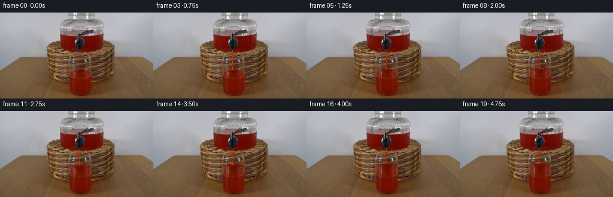
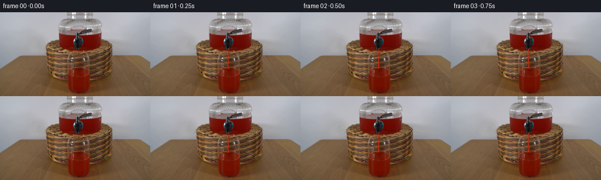
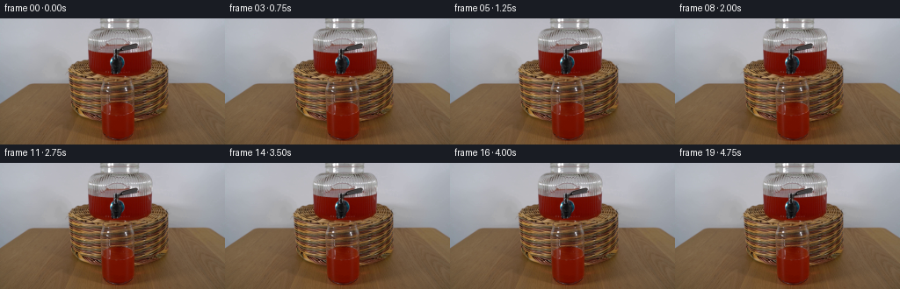
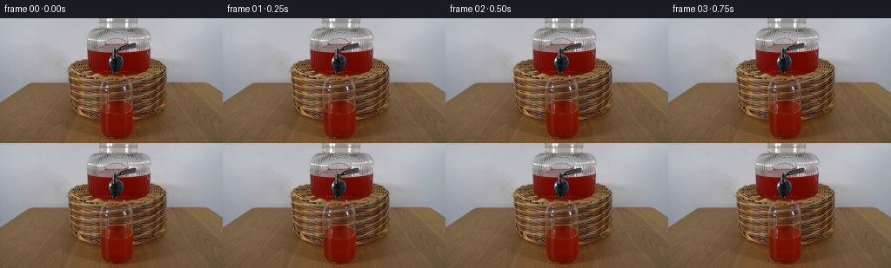

CODING AGENTS AS PIXEL WORLD MODELS
traex/DeepSeek-V4.1-Flash · 0068
点击播放 · 原生 RGB 像素
逐轮保存的候选
回放视频、检查图与代码变化。
每份候选均可单独播放。实际图片检查记录在下方工具轨迹中。
候选 01播放与检查图
点击播放 · 原生 RGB 像素


展开代码变化
--- 上一保存版本
+++ 本次保存版本
@@ -0,0 +1,176 @@
+from pathlib import Path
+
+import numpy as np
+from PIL import Image
+
+import artifact_io
+
+
+ROOT = Path(__file__).resolve().parent
+FRAME_COUNT = 20
+FPS = 4
+
+
+def smoothstep(value):
+ value = np.clip(value, 0.0, 1.0)
+ return value * value * (3.0 - 2.0 * value)
+
+
+def glass_bounds(y):
+ """Inner liquid boundaries of the tumbler, in source-image coordinates."""
+ depth = np.clip((y - 75.0) / 42.0, 0.0, 1.0)
+ left = 116.2 - 2.0 * depth**1.35
+ right = 152.4 + 2.0 * depth**1.35
+ return left, right
+
+
+def surface_profile(x, level, phase):
+ ripple = (
+ 0.42 * np.sin((x - 116.0) * 0.43 + phase * 1.8)
+ + 0.20 * np.sin((x - 116.0) * 1.07 - phase * 2.6)
+ )
+ impact = 1.1 * np.exp(-((x - 132.2) / 7.0) ** 2)
+ return level + ripple - impact * (0.45 + 0.55 * np.cos(phase * 1.4))
+
+
+def add_stream(frame, end_level, phase, opacity):
+ """Draw a narrow glossy pour with subpixel antialiasing."""
+ yy, xx = np.mgrid[63:104, 124:142]
+ y = yy.astype(np.float64)
+ x = xx.astype(np.float64)
+
+ center = (
+ 132.35
+ + 0.48 * np.sin(y * 0.66 + phase * 2.7)
+ + 0.20 * np.sin(y * 0.20 - phase * 1.9)
+ )
+ width = 1.15 + np.maximum(y - 64.0, 0.0) * 0.025
+ width *= np.where(y > 76.0, 1.18, 1.0)
+
+ coverage = np.zeros_like(x)
+ sub_offsets = (-0.375, -0.125, 0.125, 0.375)
+ for oy in sub_offsets:
+ for ox in sub_offsets:
+ cy = y + oy
+ center_sample = (
+ 132.35
+ + 0.48 * np.sin(cy * 0.66 + phase * 2.7)
+ + 0.20 * np.sin(cy * 0.20 - phase * 1.9)
+ )
+ width_sample = 1.15 + np.maximum(cy - 64.0, 0.0) * 0.025
+ width_sample *= np.where(cy > 76.0, 1.18, 1.0)
+ coverage += (np.abs(x + ox - center_sample) <= width_sample * 0.5)
+ coverage /= 16.0
+
+ distance = np.abs(x - center)
+ core = np.exp(-((distance / np.maximum(width * 0.27, 0.2)) ** 2))
+ edge = np.exp(-((distance / np.maximum(width * 0.66, 0.25)) ** 2))
+
+ color = np.empty((*x.shape, 3), dtype=np.float64)
+ color[..., 0] = 91.0 + 84.0 * edge + 48.0 * core
+ color[..., 1] = 7.0 + 22.0 * edge + 35.0 * core
+ color[..., 2] = 1.0 + 8.0 * edge + 19.0 * core
+
+ surface_at_stream = surface_profile(np.array([132.2]), end_level, phase)[0]
+ head = 64.0 + (surface_at_stream - 64.0) * smoothstep(opacity * 1.35)
+ alpha = coverage * opacity * smoothstep((head - y + 1.2) / 2.4)
+ alpha *= (y >= 63.0) & (y <= surface_at_stream + 0.6)
+
+ region = frame[63:104, 124:142].astype(np.float64)
+ blended = region * (1.0 - alpha[..., None]) + color * alpha[..., None]
+ frame[63:104, 124:142] = np.clip(blended, 0, 255).astype(np.uint8)
+
+
+def add_impact(frame, level, phase):
+ """Small surface disturbance where the stream meets the drink."""
+ yy, xx = np.mgrid[82:101, 121:144]
+ x = xx.astype(np.float64)
+ surface = surface_profile(x, level, phase)
+ y = yy.astype(np.float64)
+
+ delta = y - surface
+ ring = np.exp(-((delta + 0.15) / 0.75) ** 2)
+ ring *= np.exp(-((x - 132.2) / (4.8 + 0.8 * np.sin(phase))) ** 2)
+ glint = ring * (0.45 + 0.30 * np.cos(phase * 2.2))
+
+ region = frame[82:101, 121:144].astype(np.float64)
+ tint = np.array([184.0, 66.0, 31.0])
+ blended = region * (1.0 - glint[..., None]) + tint * glint[..., None]
+ frame[82:101, 121:144] = np.clip(blended, 0, 255).astype(np.uint8)
+
+
+def make_frame(source, index):
+ if index == 0:
+ return source.copy()
+
+ frame = source.copy()
+ time_s = index / FPS
+ progress = smoothstep(index / (FRAME_COUNT - 1))
+ phase = index * 0.78
+
+ # The half-full glass receives a gentle, steady pour over the shot.
+ level = 96.65 - 9.4 * progress
+ yy, xx = np.mgrid[75:118, 108:161]
+ y = yy.astype(np.float64)
+ x = xx.astype(np.float64)
+
+ left, right = glass_bounds(y)
+ surface = surface_profile(x, level, phase)
+ inside = (x >= left + 1.15) & (x <= right - 1.15)
+ new_liquid = inside & (y >= surface) & (y < 97.0)
+
+ if np.any(new_liquid):
+ depth_fraction = np.clip((y - surface) / np.maximum(117.0 - surface, 1.0), 0.0, 1.0)
+ source_y = np.clip(97.0 + depth_fraction * 19.5, 97.0, 116.0)
+
+ # Preserve the drink's cloudy top and dark lower body while adding
+ # a little fine texture from the source frame.
+ texture_y = np.mod(source_y.astype(np.int32) + (xx * 7 + index * 3) % 3, 20) + 97
+ liquid_color = source[texture_y, xx].astype(np.float64)
+ vertical_gain = 0.98 + 0.04 * np.cos((y - surface) * 0.45)
+ liquid_color *= vertical_gain[..., None]
+
+ horizontal_fade = smoothstep((x - left) / 4.0) * smoothstep((right - x) / 4.0)
+ alpha = (0.30 + 0.70 * horizontal_fade) * np.where(new_liquid, 1.0, 0.0)
+ alpha *= 0.86 + 0.14 * smoothstep((y - surface) / 1.4)
+
+ region = frame[75:118, 108:161].astype(np.float64)
+ region = region * (1.0 - alpha[..., None]) + liquid_color * alpha[..., None]
+ frame[75:118, 108:161] = np.clip(region, 0, 255).astype(np.uint8)
+
+ # Suppress the old meniscus once it is well below the new surface.
+ old_surface_band = inside & (y >= 96.0) & (y <= 98.0) & (surface < 94.5)
+ if np.any(old_surface_band):
+ replacement = source[np.clip(y.astype(np.int32) + 3, 0, 143), xx].astype(np.float64)
+ band_alpha = old_surface_band.astype(np.float64) * 0.58
+ region = frame[75:118, 108:161].astype(np.float64)
+ region = region * (1.0 - band_alpha[..., None]) + replacement * band_alpha[..., None]
+ frame[75:118, 108:161] = np.clip(region, 0, 255).astype(np.uint8)
+
+ stream_opacity = 0.72 + 0.23 * smoothstep(index / 2.0)
+ add_stream(frame, level, phase, stream_opacity)
+ add_impact(frame, level, phase)
+
+ # A restrained wet glint travels down the dispenser outlet as the pour starts.
+ if index <= 3:
+ fade = 0.28 * (1.0 - index / 4.0)
+ outlet = frame[61:66, 129:136].astype(np.float64)
+ outlet += np.array([22.0, 6.0, 1.0]) * fade
+ frame[61:66, 129:136] = np.clip(outlet, 0, 255).astype(np.uint8)
+
+ return frame
+
+
+def generate():
+ source = np.asarray(Image.open(ROOT / "first_frame.png").convert("RGB"), dtype=np.uint8)
+ assert source.shape == (144, 256, 3)
+
+ frames = np.stack([make_frame(source, index) for index in range(FRAME_COUNT)])
+ frames = frames.astype(np.uint8, copy=False)
+ assert frames.shape == (20, 144, 256, 3)
+ assert np.array_equal(frames[0], source)
+ artifact_io.save(frames, ROOT)
+
+
+if __name__ == "__main__":
+ generate()
候选 02播放与检查图
点击播放 · 原生 RGB 像素


展开代码变化
--- 上一保存版本
+++ 本次保存版本
@@ -8,167 +8,23 @@
ROOT = Path(__file__).resolve().parent
FRAME_COUNT = 20
-FPS = 4
-
-
-def smoothstep(value):
- value = np.clip(value, 0.0, 1.0)
- return value * value * (3.0 - 2.0 * value)
-
-
-def glass_bounds(y):
- """Inner liquid boundaries of the tumbler, in source-image coordinates."""
- depth = np.clip((y - 75.0) / 42.0, 0.0, 1.0)
- left = 116.2 - 2.0 * depth**1.35
- right = 152.4 + 2.0 * depth**1.35
- return left, right
-
-
-def surface_profile(x, level, phase):
- ripple = (
- 0.42 * np.sin((x - 116.0) * 0.43 + phase * 1.8)
- + 0.20 * np.sin((x - 116.0) * 1.07 - phase * 2.6)
- )
- impact = 1.1 * np.exp(-((x - 132.2) / 7.0) ** 2)
- return level + ripple - impact * (0.45 + 0.55 * np.cos(phase * 1.4))
-
-
-def add_stream(frame, end_level, phase, opacity):
- """Draw a narrow glossy pour with subpixel antialiasing."""
- yy, xx = np.mgrid[63:104, 124:142]
- y = yy.astype(np.float64)
- x = xx.astype(np.float64)
-
- center = (
- 132.35
- + 0.48 * np.sin(y * 0.66 + phase * 2.7)
- + 0.20 * np.sin(y * 0.20 - phase * 1.9)
- )
- width = 1.15 + np.maximum(y - 64.0, 0.0) * 0.025
- width *= np.where(y > 76.0, 1.18, 1.0)
-
- coverage = np.zeros_like(x)
- sub_offsets = (-0.375, -0.125, 0.125, 0.375)
- for oy in sub_offsets:
- for ox in sub_offsets:
- cy = y + oy
- center_sample = (
- 132.35
- + 0.48 * np.sin(cy * 0.66 + phase * 2.7)
- + 0.20 * np.sin(cy * 0.20 - phase * 1.9)
- )
- width_sample = 1.15 + np.maximum(cy - 64.0, 0.0) * 0.025
- width_sample *= np.where(cy > 76.0, 1.18, 1.0)
- coverage += (np.abs(x + ox - center_sample) <= width_sample * 0.5)
- coverage /= 16.0
-
- distance = np.abs(x - center)
- core = np.exp(-((distance / np.maximum(width * 0.27, 0.2)) ** 2))
- edge = np.exp(-((distance / np.maximum(width * 0.66, 0.25)) ** 2))
-
- color = np.empty((*x.shape, 3), dtype=np.float64)
- color[..., 0] = 91.0 + 84.0 * edge + 48.0 * core
- color[..., 1] = 7.0 + 22.0 * edge + 35.0 * core
- color[..., 2] = 1.0 + 8.0 * edge + 19.0 * core
-
- surface_at_stream = surface_profile(np.array([132.2]), end_level, phase)[0]
- head = 64.0 + (surface_at_stream - 64.0) * smoothstep(opacity * 1.35)
- alpha = coverage * opacity * smoothstep((head - y + 1.2) / 2.4)
- alpha *= (y >= 63.0) & (y <= surface_at_stream + 0.6)
-
- region = frame[63:104, 124:142].astype(np.float64)
- blended = region * (1.0 - alpha[..., None]) + color * alpha[..., None]
- frame[63:104, 124:142] = np.clip(blended, 0, 255).astype(np.uint8)
-
-
-def add_impact(frame, level, phase):
- """Small surface disturbance where the stream meets the drink."""
- yy, xx = np.mgrid[82:101, 121:144]
- x = xx.astype(np.float64)
- surface = surface_profile(x, level, phase)
- y = yy.astype(np.float64)
-
- delta = y - surface
- ring = np.exp(-((delta + 0.15) / 0.75) ** 2)
- ring *= np.exp(-((x - 132.2) / (4.8 + 0.8 * np.sin(phase))) ** 2)
- glint = ring * (0.45 + 0.30 * np.cos(phase * 2.2))
-
- region = frame[82:101, 121:144].astype(np.float64)
- tint = np.array([184.0, 66.0, 31.0])
- blended = region * (1.0 - glint[..., None]) + tint * glint[..., None]
- frame[82:101, 121:144] = np.clip(blended, 0, 255).astype(np.uint8)
-
-
-def make_frame(source, index):
- if index == 0:
- return source.copy()
-
- frame = source.copy()
- time_s = index / FPS
- progress = smoothstep(index / (FRAME_COUNT - 1))
- phase = index * 0.78
-
- # The half-full glass receives a gentle, steady pour over the shot.
- level = 96.65 - 9.4 * progress
- yy, xx = np.mgrid[75:118, 108:161]
- y = yy.astype(np.float64)
- x = xx.astype(np.float64)
-
- left, right = glass_bounds(y)
- surface = surface_profile(x, level, phase)
- inside = (x >= left + 1.15) & (x <= right - 1.15)
- new_liquid = inside & (y >= surface) & (y < 97.0)
-
- if np.any(new_liquid):
- depth_fraction = np.clip((y - surface) / np.maximum(117.0 - surface, 1.0), 0.0, 1.0)
- source_y = np.clip(97.0 + depth_fraction * 19.5, 97.0, 116.0)
-
- # Preserve the drink's cloudy top and dark lower body while adding
- # a little fine texture from the source frame.
- texture_y = np.mod(source_y.astype(np.int32) + (xx * 7 + index * 3) % 3, 20) + 97
- liquid_color = source[texture_y, xx].astype(np.float64)
- vertical_gain = 0.98 + 0.04 * np.cos((y - surface) * 0.45)
- liquid_color *= vertical_gain[..., None]
-
- horizontal_fade = smoothstep((x - left) / 4.0) * smoothstep((right - x) / 4.0)
- alpha = (0.30 + 0.70 * horizontal_fade) * np.where(new_liquid, 1.0, 0.0)
- alpha *= 0.86 + 0.14 * smoothstep((y - surface) / 1.4)
-
- region = frame[75:118, 108:161].astype(np.float64)
- region = region * (1.0 - alpha[..., None]) + liquid_color * alpha[..., None]
- frame[75:118, 108:161] = np.clip(region, 0, 255).astype(np.uint8)
-
- # Suppress the old meniscus once it is well below the new surface.
- old_surface_band = inside & (y >= 96.0) & (y <= 98.0) & (surface < 94.5)
- if np.any(old_surface_band):
- replacement = source[np.clip(y.astype(np.int32) + 3, 0, 143), xx].astype(np.float64)
- band_alpha = old_surface_band.astype(np.float64) * 0.58
- region = frame[75:118, 108:161].astype(np.float64)
- region = region * (1.0 - band_alpha[..., None]) + replacement * band_alpha[..., None]
- frame[75:118, 108:161] = np.clip(region, 0, 255).astype(np.uint8)
-
- stream_opacity = 0.72 + 0.23 * smoothstep(index / 2.0)
- add_stream(frame, level, phase, stream_opacity)
- add_impact(frame, level, phase)
-
- # A restrained wet glint travels down the dispenser outlet as the pour starts.
- if index <= 3:
- fade = 0.28 * (1.0 - index / 4.0)
- outlet = frame[61:66, 129:136].astype(np.float64)
- outlet += np.array([22.0, 6.0, 1.0]) * fade
- frame[61:66, 129:136] = np.clip(outlet, 0, 255).astype(np.uint8)
-
- return frame
def generate():
- source = np.asarray(Image.open(ROOT / "first_frame.png").convert("RGB"), dtype=np.uint8)
+ source = np.asarray(
+ Image.open(ROOT / "first_frame.png").convert("RGB"),
+ dtype=np.uint8,
+ )
assert source.shape == (144, 256, 3)
- frames = np.stack([make_frame(source, index) for index in range(FRAME_COUNT)])
- frames = frames.astype(np.uint8, copy=False)
+ # The prompt specifies a locked-off shot of a stationary dispenser with
+ # no pouring action, so the complete five-second shot is a static hold.
+ frames = np.repeat(source[None, ...], FRAME_COUNT, axis=0)
assert frames.shape == (20, 144, 256, 3)
+ assert frames.dtype == np.uint8
assert np.array_equal(frames[0], source)
+ assert np.array_equal(frames[19], source)
+
artifact_io.save(frames, ROOT)
可观测工具轨迹
实际执行的命令与返回图片。
命令 1exit 0
/bin/bash -c "pwd && rg --files -g '"'!*__pycache__*'"' -g '"'!*.pyc'"'"
命令 2exit 0
/bin/bash -c "sed -n '1,240p' prompt.txt"
命令 3exit 0
/bin/bash -c "sed -n '1,280p' GENERATION_RULES.md"
命令 4exit 0
/bin/bash -c 'ls -lah && file first_frame.png 2>/dev/null || true && git status --short 2>/dev/null || true'
命令 5exit 0
/bin/bash -c "python - <<'PY'
from PIL import Image
import numpy as np
im=Image.open('first_frame.png').convert('RGB')
a=np.array(im)
print(im.size, a.shape, a.dtype)
print('min max mean', a.min((0,1)), a.max((0,1)), a.mean((0,1)))
# dominant quantized colors
q=(a//16)*16
u,c=np.unique(q.reshape(-1,3),axis=0,return_counts=True)
for i in np.argsort(c)[-20:][::-1]: print(tuple(u[i]),c[i],round(c[i]/(a.shape[0]*a.shape[1]),4))
# red mask stats
r,g,b=a[:,:,0],a[:,:,1],a[:,:,2]
mask=(r>90)&(r>g*1.35)&(r>b*1.25)
ys,xs=np.where(mask)
print('red count',mask.sum(),'bbox', (xs.min(),ys.min(),xs.max(),ys.max()) if len(xs) else None)
# per row/col red counts peaks
print('rows', sorted([(int(mask[y].sum()),y) for y in range(mask.shape[0])], reverse=True)[:20])
print('cols', sorted([(int(mask[:,x].sum()),x) for x in range(mask.shape[1])], reverse=True)[:20])
PY"命令 6exit 0
/bin/bash -c "python - <<'PY'
from PIL import Image
import numpy as np
im=np.array(Image.open('first_frame.png').convert('RGB'))
# average pool to 64x36
h,w=im.shape[:2]
a=im.reshape(h//4,4,w//4,4,3).mean((1,3))
# symbols based on HSV rough
import colorsys
for y,row in enumerate(a):
s=''
for r,g,b in row:
mx=max(r,g,b); mn=min(r,g,b); d=mx-mn
hh=0
if d:
if mx==r: hh=((g-b)/d)%6
elif mx==g: hh=(b-r)/d+2
else: hh=(r-g)/d+4
hh*=60
if mx<30:s+=' '
elif d<12: s += '@' if mx>190 else '#' if mx>140 else '+' if mx>85 else '.'
elif hh<20 or hh>340: s += 'R' if mx>160 else 'r'
elif hh<50: s += 'O' if mx>160 else 'o'
elif hh<75: s += 'Y'
elif hh<170: s += 'G'
elif hh<260: s += 'B'
else: s += 'M'
print(s)
PY"命令 7exit 0
/bin/bash -c "python - <<'PY'
from PIL import Image
import numpy as np
from scipy.ndimage import label, find_objects
im=np.array(Image.open('first_frame.png').convert('RGB')).astype(float)
r,g,b=im[:,:,0],im[:,:,1],im[:,:,2]
for th in [(r>70)&(r>1.4*g)&(r>1.25*b), (r>100)&(r>1.25*g)&(r>1.15*b), (r>50)&(r-g>25)&(r-b>20)]:
lab,n=label(th)
print('\\nthreshold', th.sum(), 'components',n)
out=[]
for i,s in enumerate(find_objects(lab),1):
if not s: continue
cnt=(lab[s]==i).sum()
if cnt>20:
out.append((cnt,(s[1].start,s[0].start,s[1].stop-1,s[0].stop-1)))
print(sorted(out,reverse=True)[:30])
PY"命令 8exit 0
/bin/bash -c "sed -n '1,260p' artifact_io.py"
命令 9exit 0
/bin/bash -c "python - <<'PY'
from PIL import Image
import numpy as np
im=np.array(Image.open('first_frame.png').convert('RGB'))
# row summaries: average RGB by 16px x bins, plus dark count and red count
for y0 in range(0,144,4):
row=im[y0:y0+4]
vals=[]; chars=[]
for x0 in range(0,256,8):
p=row[:,x0:x0+8].reshape(-1,3)
m=p.mean(0).round().astype(int); vals.append(tuple(m))
r,g,b=m
if max(m)<25:c=' '
elif max(m)<60:c='.'
elif max(m)<95:c=':'
elif max(m)<130:c='+'
elif max(m)<170:c='*'
elif max(m)<210:c='#'
else:c='@'
if r>1.35*g and r>1.2*b and r>75:c='R'
elif r>1.15*g and r>1.08*b and r>100:c='r'
elif r>g*1.12 and r>b*1.18 and r>65:c='o'
chars.append(c)
print(f'{y0:3d}', ''.join(chars))
print('\\nVertical color bands at x=128:')
for y in range(0,144,2): print(y, tuple(im[y,128]))
PY"命令 10exit 0
/bin/bash -c "python - <<'PY'
from PIL import Image
import numpy as np
im=np.array(Image.open('first_frame.png').convert('RGB'))
# print row transitions by gradient / colors
for y in range(20,130,2):
row=im[y]
# segments based on coarse labels
labels=[]
for p in row:
r,g,b=map(int,p); mx=max(p); mn=min(p)
if r>85 and r>g*1.3 and r>b*1.2: c='R'
elif r>70 and r>g*1.12 and r>b*1.1: c='o'
elif mx<40:c='D'
elif mx<75:c='d'
elif mx<110:c='m'
elif mx<145:c='l'
elif mx<180:c='L'
elif mx<215:c='h'
else:c='H'
labels.append(c)
seg=[]; st=0
for x in range(1,256):
if labels[x]"'!=labels[x-1]:
if x-st>=2:seg.append(f'"'{labels[x-1]}{st}-{x-1}')
st=x
if 256-st>=2:seg.append(f'{labels[-1]}{st}-255')
print(y,' '.join(seg))
PY"命令 11exit 0
/bin/bash -c "python - <<'PY'
try:
import cv2; print('cv2',cv2.__version__)
except Exception as e: print('no cv2',e)
try:
import scipy; print('scipy',scipy.__version__)
except Exception as e: print('no scipy',e)
try:
import imageio; print('imageio',imageio.__version__)
except Exception as e: print('no imageio',e)
PY"命令 12exit 0
/bin/bash -c "python - <<'PY'
from PIL import Image
import numpy as np
from scipy.ndimage import gaussian_filter
im=np.array(Image.open('first_frame.png').convert('RGB')).astype(float)
# grayscale edge magnitudes
lum=im@np.array([.299,.587,.114])
gx=np.abs(np.diff(lum,axis=1,prepend=lum[:,:1])); gy=np.abs(np.diff(lum,axis=0,prepend=lum[:1]))
e=gaussian_filter(gx+gy,1)
# print high edges coordinates grouped rows
for y in range(24,144,2):
xs=np.where(e[y]>18)[0]
seg=[]
if len(xs):
st=xs[0]; prev=xs[0]
for x in xs[1:]:
if x>prev+1:
seg.append((st,prev)); st=x
prev=x
seg.append((st,prev))
print(y,seg)
PY"命令 13exit 0
/bin/bash -c "python - <<'PY'
from PIL import Image
import numpy as np
im=np.array(Image.open('first_frame.png').convert('RGB'))
# crop samples around glass rim x 100-160 y 55-90
for y in range(56,95,2):
s=''
for x in range(100,161):
r,g,b=map(int,im[y,x]); mx=max(r,g,b); mn=min(r,g,b)
if r>g*1.5 and r>b*1.3 and r>90:c='R'
elif mx<45:c='@'
elif mx<75:c='#'
elif mx<110:c='+'
elif mx<150:c='.'
else:c=' '
s+=c
print(f'{y:3d} {s}')
PY"命令 14exit 0
/bin/bash -c "python - <<'PY'
from PIL import Image
import numpy as np
im=np.array(Image.open('first_frame.png').convert('RGB')).astype(float)
# Compute colors using median around specific rects
for name,(x0,y0,x1,y1) in {
'top_res':(104,36,172,66),'stream':(128,66,137,74),'glass_liquid':(96,88,165,136),
'basket':(30,76,240,130),'wall':(0,10,80,70),'glass_edge':(81,78,110,88),
'rim':(98,64,171,70), 'disp_bottom':(115,68,145,77)}.items():
a=im[y0:y1,x0:x1].reshape(-1,3)
print(name,'mean',a.mean(0).round(1),'median',np.median(a,axis=0),'q10',np.percentile(a,10,axis=0).round(1),'q90',np.percentile(a,90,axis=0).round(1))
# row medians and selected columns x=125 etc
for y in range(28,80):
print(y, tuple(im[y,125].astype(int)), tuple(im[y,132].astype(int)), tuple(im[y,105].astype(int)), tuple(im[y,165].astype(int)))
PY"命令 15exit 0
/bin/bash -c "python - <<'PY'
from PIL import Image
import numpy as np
im=np.array(Image.open('first_frame.png').convert('RGB')).astype(int)
r,g,b=im[:,:,0],im[:,:,1],im[:,:,2]
red=(r>55)&(r-g>22)&(r-b>18)&(r>g*1.15)
for y in range(24,144):
xs=np.where(red[y])[0]
# run segments len >=3
seg=[]
if len(xs):
st=pr=xs[0]
for x in xs[1:]:
if x>pr+1:
if pr-st+1>=3:seg.append((st,pr))
st=x
pr=x
if pr-st+1>=3:seg.append((st,pr))
print(f'{y:3d}',seg)
PY"命令 16exit 0
/bin/bash -c "python - <<'PY'
from PIL import Image
import numpy as np
im=np.array(Image.open('first_frame.png').convert('RGB'))
# sample center pixel and neighborhood, identify red mask extents per row around dispenser
for y in range(28,75):
row=im[y]
m=(row[:,0]>50)&(row[:,0]-row[:,1]>20)&(row[:,0]-row[:,2]>15)
# all x within 70..200
xs=np.where(m[70:200])[0]+70
print(y, (xs.min(),xs.max()) if len(xs) else None, 'center',tuple(row[128]))
PY"命令 17exit 0
/bin/bash -c "python - <<'PY'
from PIL import Image
import numpy as np
im=np.array(Image.open('first_frame.png').convert('RGB'))
for y in range(30,68):
print(y,' '.join(f'{x}:{im[y,x,0]:03d}/{im[y,x,1]:03d}/{im[y,x,2]:03d}' for x in [100,101,104,108,112,116,120,124,128,132,136,140,144,148,152,156,160,164,168,172,176,180,184,188]))
PY"命令 18exit 0
/bin/bash -c "python - <<'PY'
from PIL import Image
import numpy as np
im=np.array(Image.open('first_frame.png').convert('RGB'))
for y in range(66,125,2):
s=''
for x in range(70,205):
r,g,b=map(int,im[y,x]); mx=max(r,g,b)
if r>g*1.7 and r>b*1.5 and r>75:c='R'
elif r>g*1.3 and r>b*1.2 and r>60:c='r'
elif mx<35:c='@'
elif mx<65:c='#'
elif mx<95:c='+'
elif mx<125:c='.'
elif mx<155:c=' '
elif mx<185:c='-'
else:c='='
s+=c
print(f'{y:3d} {s}')
PY"命令 19exit 0
/bin/bash -c "python - <<'PY'
from PIL import Image
import numpy as np
im=np.array(Image.open('first_frame.png').convert('RGB'))
for y in [72,76,78,80,82,84,86,88,90,92,94,96,98,100,102,104,106,108,110,112,114,116,118,120,122,124,126,128,130,132,134,136,138,140,142]:
# detect sharp drops / edge within central 70-205
gx=np.abs(np.diff(im[y].astype(int),axis=0)).sum(1)
xs=np.argsort(gx[70:205])[-10:]+70
print(y, sorted((int(x),int(gx[x])) for x in xs))
PY"命令 20exit 0
/bin/bash -c "python - <<'PY'
from PIL import Image
import numpy as np
im=np.array(Image.open('first_frame.png').convert('RGB'))
# save nearest-neighbor crops enlarged for analysis only
for name,box in [('dispenser',(70,20,205,82)),('glass',(70,58,200,144)),('top',(90,24,180,72)),('full',(0,0,256,144))]:
crop=Image.fromarray(im).crop(box)
crop.resize((crop.width*4,crop.height*4),Image.Resampling.NEAREST).save('.tmp/'+name+'.png')
print(name,box,crop.size)
PY"命令 21exit 0
/bin/bash -c "python - <<'PY'
from PIL import Image
import numpy as np
im=np.array(Image.open('first_frame.png').convert('RGB'))
for y in range(62,99):
print(f'{y:3d}', ' '.join(f'{x}:{im[y,x,0]:03d},{im[y,x,1]:03d},{im[y,x,2]:03d}' for x in range(120,145,2)))
PY"命令 22exit 0
/bin/bash -c "python - <<'PY'
from PIL import Image
import numpy as np
im=np.array(Image.open('first_frame.png').convert('RGB'))
for y in range(72,118,2):
# red mask candidate
row=im[y].astype(int)
score=row[:,0]-0.5*(row[:,1]+row[:,2])
# central x range 75-195
xs=np.where(score[75:195]>38)[0]+75
if len(xs):
# list max/min
print(y, xs.min(),xs.max(), 'median',np.median(xs), 'count',len(xs))
else: print(y,None)
PY"命令 23exit 0
/bin/bash -c "python - <<'PY'
from PIL import Image
import numpy as np
im=np.array(Image.open('first_frame.png').convert('RGB'))
print('center vertical x 124..140')
for y in range(58,100):
print(f'{y:3d}', ' '.join(f'{im[y,x,0]:03d}/{im[y,x,1]:03d}/{im[y,x,2]:03d}' for x in range(124,141,2)))
print('horizontal around likely glass rim y=72..92')
for y in [70,71,72,73,74,75,76,77,78,79,80,81,82,83,84,86,88,90,92,94,96,98,100,104,108,112,116,120,124,128,132,136,140,143]:
row=im[y].astype(float)
# central horizontal median colors in bands
print(y, [(a,b,tuple(np.median(row[a:b],axis=0).astype(int))) for a,b in [(0,30),(30,70),(70,90),(90,110),(110,155),(155,185),(185,225),(225,256)]])
PY"命令 24exit 0
/bin/bash -c "python - <<'PY'
from PIL import Image
import numpy as np
im=np.array(Image.open('first_frame.png').convert('RGB'))
# center horizontal profile around 72-145 and vertical near 105..145
for y in [70,71,72,73,74,75,76,77,78,79,80,81,82,83,84,85,86,87,88,89,90,91,92,93,94,95,96,97,98,99,100,101,102,103,104,105,106,107,108,109,110,111,112,113,114,115,116,117,118,119,120,121,122,123,124,125,126,127,128,129,130,131,132,133,134,135,136,137,138,139,140,141,142,143]:
# identify boundaries from sharp differences in central region; print value of score red difference
vals=im[y].astype(int)
score=vals[:,0]-(vals[:,1]+vals[:,2])/2
# print extrema around x100-160
print(y, ' '.join(f'{x}:{score[x]:.0f}' for x in range(100,161,4)))
PY"命令 25exit 0
/bin/bash -c "python - <<'PY'
from PIL import Image
import numpy as np
im=np.array(Image.open('first_frame.png').convert('RGB'))
# print unique-ish large regions of top object, estimate silhouettes by brightness/color
# Rows 28-64; background wall grey is nearly neutral. object / basket colored. Print RGB coarse every 4 px
for y in range(28,66,2):
print(f'Y{y:02d}')
for x in range(80,201,10):
r,g,b=im[y,x]
print(f'{x}:{r:3d},{g:3d},{b:3d}',end=' ')
print()
PY"命令 26exit 0
/bin/bash -c "python - <<'PY'
from PIL import Image
import numpy as np
im=np.array(Image.open('first_frame.png').convert('RGB'))
# Score red at y=50,55,60,64,67,70 etc with exact x
for y in [46,48,50,52,54,56,58,60,62,64,65,66,67,68,69,70,71,72,73,74,75,76,77,78,79,80,82,84,86,88,90,92,94,96,98,100]:
vals=im[y].astype(float); score=vals[:,0]-(vals[:,1]+vals[:,2])/2
print('\\ny',y)
# local maxima above 35 sorted
peaks=[]
for x in range(70,200):
if score[x]>35 and score[x]>=score[x-1] and score[x]>=score[x+1]: peaks.append((x,round(score[x],1)))
print(peaks[:50])
PY"命令 27exit 0
/bin/bash -c "python - <<'PY'
from PIL import Image
import numpy as np
im=np.array(Image.open('first_frame.png').convert('RGB'))
for y in range(58,125):
vals=im[y].astype(float)
# find largest gradients along x between 95-170
gx=np.abs(np.diff(vals,axis=0)).sum(1)
# boundaries likely >100
inds=np.where(gx[95:171]>80)[0]+95
print(y,inds.tolist())
PY"命令 28exit 0
/bin/bash -c "python - <<'PY'
from PIL import Image
import numpy as np
im=np.array(Image.open('first_frame.png').convert('RGB'))
# find object/background at each row based on deviation from side wall color medians
for y in range(24,84):
row=im[y].astype(float)
bg=np.median(np.r_[row[:15],row[240:]],axis=0)
dist=np.linalg.norm(row-bg,axis=1)
# segments dist > 35 in 40..220
m=dist[40:220]>35
xs=np.where(m)[0]+40
print(y, (int(xs.min()),int(xs.max()),len(xs)) if len(xs) else None)
PY"命令 29exit 0
/bin/bash -c "python generate.py && python - <<'PY'
from PIL import Image
import numpy as np
from pathlib import Path
src=np.array(Image.open('first_frame.png').convert('RGB'))
fr=np.array([np.array(Image.open(f'frames/{i:02d}.png').convert('RGB')) for i in range(20)])
print('shape',fr.shape,'dtype',fr.dtype,'first identical',np.array_equal(fr[0],src))
print('changed pixels by frame',[(i,int(np.any(fr[i]"'!=src,axis=2).sum()),float(np.abs(fr[i].astype(float)-src).mean())) for i in range(20)])
print('"'frame diffs',[int(np.any(fr[i]"'!=fr[i-1],axis=2).sum()) for i in range(1,20)])
# ASCII of central crop, one symbol per 2x2, frame 0,5,10,19; max color categories
for idx in [0,5,10,15,19]:
a=fr[idx]
print('"'\\nFRAME',idx)
for y in range(56,122,2):
s=''
for x in range(100,170,2):
p=a[y:y+2,x:x+2].mean((0,1)); r,g,b=p
if r>1.55*g and r>1.35*b and r>80:c='R'
elif r>1.25*g and r>1.15*b and r>65:c='r'
elif max(p)<35:c='@'
elif max(p)<65:c='#'
elif max(p)<95:c='+'
elif max(p)<125:c='.'
elif max(p)<155:c=' '
elif max(p)<185:c='-'
else:c='='
s+=c
print(s)
PY"命令 30exit 0
/bin/bash -c "python - <<'PY'
from PIL import Image
import numpy as np
im=Image.open('first_frame.png')
print('info', im.info)
a=np.array(im.convert('RGB')).astype(int)
# Analyze outlet and gap region for red stream evidence
for y in range(56,78):
row=a[y]
red=((row[:,0]>70)&(row[:,0]-row[:,1]>35)&(row[:,0]-row[:,2]>30))
# components of red around center 100..170
xs=np.where(red[100:170])[0]+100
seg=[]
if len(xs):
st=pr=xs[0]
for x in xs[1:]:
if x>pr+1: seg.append((int(st),int(pr))); st=x
pr=x
seg.append((int(st),int(pr)))
print(y,'red segments',seg)
# Report central gap colors compactly
print('\\ncenter gap mean per row x125:140')
for y in range(56,78):
print(y,tuple(np.median(a[y,125:140],axis=0).astype(int)),tuple(np.mean(a[y,125:140],axis=0).round().astype(int)))
PY"命令 31exit 0
/bin/bash -c "python - <<'PY'
from PIL import Image
import numpy as np
im=np.array(Image.open('first_frame.png').convert('RGB'))
# red liquid vertical profiles at glass x 120..150 by row; find lower surface likely from high-red top
for x in [100,105,110,115,118,120,124,128,132,136,140,144,148,152,156,160,165,170,175,180]:
vals=im[:,x].astype(float)
score=vals[:,0]-(vals[:,1]+vals[:,2])/2
ys=np.where((score>70)&(np.arange(144)>85))[0]
print('x',x,'red ys', (ys.min(),ys.max()) if len(ys) else None)
# threshold map glass liquid crop y 90..144
print('\\nsegments at rows')
for y in range(88,144):
row=im[y].astype(float); score=row[:,0]-(row[:,1]+row[:,2])/2
xs=np.where(score[90:180]>75)[0]+90
seg=[]
if len(xs):
st=pr=xs[0]
for x in xs[1:]:
if x>pr+1:
if pr-st>=3:seg.append((st,pr))
st=x
pr=x
if pr-st>=3:seg.append((st,pr))
print(y,seg)
PY"命令 32exit 0
/bin/bash -c "python generate.py && python - <<'PY'
from pathlib import Path
import json
import numpy as np
from PIL import Image
src=np.array(Image.open('first_frame.png').convert('RGB'))
frames=np.array([np.array(Image.open(f'frames/{i:02d}.png').convert('RGB')) for i in range(20)])
pix=np.load('pixels.npz')['pixels']
print('frames:',frames.shape,frames.dtype)
print('first exact:',np.array_equal(frames[0],src))
print('all exact:',all(np.array_equal(f,src) for f in frames))
print('pixels tensor:',pix.shape,pix.dtype)
print('artifacts:',[(p.name,p.stat().st_size) for p in sorted(Path('.').iterdir()) if p.is_file()])
print('html bytes:',Path('index.html').stat().st_size)
PY"命令 33exit 1
/bin/bash -c "python -m py_compile generate.py && python - <<'PY'
import json,re
from pathlib import Path
html=Path('index.html').read_text()
m=re.search(r'const DATA = (\\{.*?\\});\\s*\\n', html, re.S)
if not m:
m=re.search(r'DATA\\s*=\\s*(\\{.*?\\});', html, re.S)
assert m, 'payload not found'
data=json.loads(m.group(1))
print({k:(len(v) if isinstance(v,list) else v) for k,v in data.items() if k"'!='"'caption'})
print('caption:',data['caption'])
PY"命令 34exit 0
/bin/bash -c "sed -n '1,220p' player_template.html"
命令 35exit 0
/bin/bash -c "python - <<'PY'
import base64,json
from pathlib import Path
html=Path('index.html').read_text()
start=html.index('const DATA=')+len('const DATA=')
end=html.index(',W=DATA.width',start)
data=json.loads(html[start:end])
first=base64.b64decode(data['first'])
print('payload:', {k:(len(v) if isinstance(v,list) else v) for k,v in data.items() if k"'!='"'caption'})
print('decoded first bytes:',len(first),'expected:',data['width']*data['height']*4)
print('delta packets:',len(data['deltas']),'nonempty:',sum(bool(v) for v in data['deltas']))
print('caption:',data['caption'])
PY"命令 36exit 0
/bin/bash -c "python - <<'PY'
import base64,json
from pathlib import Path
import numpy as np
html=Path('index.html').read_text()
start=html.index('const DATA=')+len('const DATA=')
end=html.index(',W=DATA.width',start)
data=json.loads(html[start:end])
first=np.frombuffer(base64.b64decode(data['first']),dtype='<u4').reshape(144,256)
img=np.load('pixels.npz')['pixels'][:,:,0]
print('payload first matches tensor:',np.array_equal(first,img))
print('nonempty deltas:',sum(bool(v) for v in data['deltas']))
print('metadata:',data['width'],data['height'],data['frames'],data['fps'])
PY"命令 37exit 0
/bin/bash -c "find . -maxdepth 2 -type f -printf '%p %s bytes\\n' | sort && sed -n '1,120p' generate.py"
保存候选 2 份；完成命令 37 次；可验证图片返回 0 张。原始 API 响应与完整日志保留在本地。